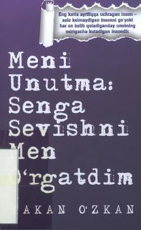

MUO'zingni sev va noto'g'ri munosabatlardan voz kech.
Bu kitob muallif Hakan Özkan tomonidan yozilgan bo'lib, sevgi, munosabatlar va o'z-o'zini hurmat qilish mavzularini qamrab oladi. Kitob o'quvchini noto'g'ri munosabatlardan chiqib, o'zini qadrlay bilishga undaydi. Asar turk tilidagi asl nusxadan o'zbek tiliga tarjima qilingan.